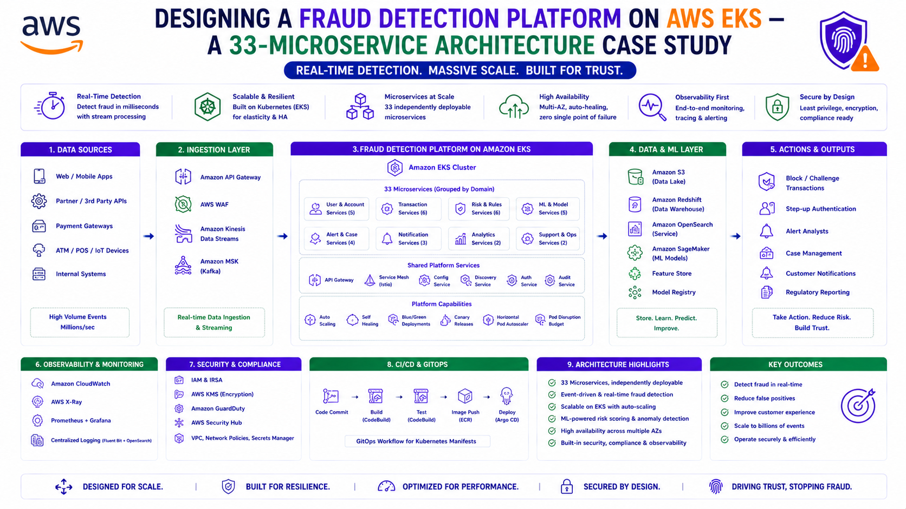

Designing a Fraud Detection Platform on AWS EKS — A 33-Microservice Architecture Case Study
AWS Series | Part 20 — Building secure, cost-optimised, cloud-native infrastructure on AWS.

TL;DR
| Dimension | The Reality |
|---|---|
| Starting point | V1 on ECS — device risk only, web channel only |
| The build | V2 on EKS from scratch — device risk + behavioural AI/ML, all channels |
| Workloads | Real-time device risk (web + mobile) and Databricks-backed behavioural scoring (mobile) |
| Team | Two engineers at peak; sole architect for months after cost cuts |
| Compliance | DORA — DR plan, FIS-tested failover, multi-AZ, AIC ratings, RTO 24h, RPO 8h |
| Compute | Managed Node Groups (Cluster Autoscaler) + Karpenter in parallel; Fargate attempted and reverted |
| Cutover | Upstream F5 DNS rule remap, tested in PA, production cutover in under 40 minutes |
| Status | Web fully migrated; mobile decommissioning of V1 completing mid-2026 |
Introduction — The Platform Behind the Series
Every post in this series so far has explained a building block: VPC design, IAM, EKS architecture, Ingress patterns, Karpenter, Terraform structure, GitOps, observability, multi-region HA. This post is where they all converge — the production platform those patterns were drawn from.
The system is a fraud detection platform for a major European bank, built on a vendor fraud risk suite and deployed on Amazon EKS. It analyses banking sessions across web and mobile channels in real time, decides whether the person operating a device is who they claim to be, and does it within a latency budget that leaves no room for sloppy infrastructure.
This is not a reference architecture. It is a case study of real constraints: a vendor stack that dictated some choices, a compliance regime that dictated others, a team that shrank to one, and a migration that had to happen while the old platform kept serving live banking traffic.
1. The Starting Point — V1 and Why It Wasn't Enough
When I joined the platform, V1 was already in production: the vendor's device risk product running on ECS, serving the web channel only. My initial brief was to help deploy the mobile channels (iOS and Android).
That brief grew. The bank's roadmap required the vendor suite's next generation — a version that bundled the existing device risk capability with a new behavioural detection layer powered by machine learning. V1's ECS footprint couldn't simply be extended into that; the new version was architected by the vendor as a Kubernetes-native product. So V2 became a greenfield build: a production EKS platform, designed from scratch, that would encompass everything V1 did plus the behavioural AI/ML stack — and eventually replace V1 entirely.
Why EKS — Three Honest Reasons
The EKS decision was not a technology beauty contest. Three factors drove it:
Vendor alignment. The vendor ran the suite on EKS themselves. Staying close to the vendor's reference deployment meant that when something broke in production at 2am and our team couldn't isolate whether the fault was infrastructure or application, the vendor could actually help debug. Diverging from their supported topology would have made every future incident a negotiation about whose problem it was.
DORA compliance. As a regulated financial institution, the platform had to satisfy DORA — documented and tested disaster recovery, multi-AZ resilience, backup and restore capability, and auditable change management. EKS with GitOps gave us the audit trail and the failover characteristics to make that case credibly.
Future supportability. Kubernetes skills are transferable and hireable. An ECS-specific platform would have been simpler on day one and harder to staff on day five hundred.
Why this matters in production: "Stay close to the vendor's supported topology" is an underrated architecture principle for vendor-software platforms. Every customisation you add is a customisation the vendor has never tested. The question to ask before deviating is not "can we?" but "who debugs this when it breaks?"
2. Two Workloads, One Platform
The platform runs roughly 33 microservices, but architecturally it is two distinct systems sharing a cluster.
Path 1 — Device Risk (Real-Time, Web + Mobile)
The device risk path answers: is this device compromised or suspicious?
Web channel:
Banking web app → injected JavaScript → device signals
→ device risk microservices on EKS → risk verdict
Mobile channel (iOS + Android):
Banking app SDK → rule-based scanning (rules authored
by business analysts + vendor) → device risk verdictThis path is synchronous and latency-sensitive. A fraud check that delays a banking transaction noticeably is a fraud check that gets removed from the flow. The services run on On-Demand capacity with topology spread across availability zones — no Spot interruption risk anywhere near the request path.
Path 2 — Behavioural AI/ML (Mobile Only, Databricks-Backed)
The behavioural path answers a harder question: is the legitimate user the one operating this device right now?
It works on behavioural biometrics — sensor data, typing cadence, how the device is held and handled. The signals stream from mobile sessions into the platform; the machine learning lives in Databricks, which computes behavioural scores that feed the final fraud decision.
Mobile session → sensor/behavioural events
→ behavioural microservices on EKS (ingestion, enrichment)
→ S3 (input buckets)
→ Databricks (ML scoring jobs on EC2 worker nodes)
→ S3 (output buckets)
→ scoring services on EKS → final combined verdictThe important nuance: a mobile transaction flows through both paths. Device risk gives a fast verdict on the device; behavioural scoring gives a deeper verdict on the human. Web transactions only see path 1. This asymmetry shaped namespace design, scaling behaviour, and where Spot capacity was acceptable (batch-leaning behavioural enrichment) versus forbidden (the synchronous device risk path).
3. The Team Reality — Architecting Alone
The staffing story matters because it shaped every pragmatic decision that follows.
At the start of the V2 build there were two of us: myself and a Kubernetes expert hired specifically for the project. We designed and built the foundation together. Then cost constraints hit, management decided the contract role had to end, and after a handover period I was the platform's sole engineer and architect — for roughly four to five months, during a greenfield build, on a regulated fraud platform.
Two consequences:
Every decision biased toward operability over elegance. A clever architecture that only one person understands is a single point of failure wearing a costume. Managed services over self-hosted, vendor defaults over customisation, boring and documented over novel.
Knowledge transfer became a deliverable. Once the platform stabilised, I trained two colleagues who had shown interest in Kubernetes — pairing on deployments, walking through the Helm structure, handing over V1 maintenance first as a lower-risk training ground. The platform now has more operators than it has ever had. That is an architecture outcome too.
4. The Build Sequence — Migrate First, Greenfield Second
The build order was deliberate:
Step 1 — Migrate device risk to EKS. The known workload first. V1's device risk services were a understood quantity — migrating them onto the new EKS platform validated the cluster design (networking, Ingress, IAM, observability) against a workload whose behaviour we already knew. Any failure was almost certainly the platform, not the application.
Step 2 — Greenfield the behavioural stack. With the platform proven, I wrote the Helm charts for the new behavioural microservices from scratch — base values, environment overrides, service-level overrides (the three-layer hierarchy from Part 11). The vendor supplied the containers; the deployment architecture, chart structure, and operational wiring were built in-house.
Traffic entered through Nginx Ingress fronted by an NLB — the vendor's reference pattern, and one more place where staying aligned with their topology paid for itself in supportability. TLS terminated at the NLB using ACM certificate ARNs for both internal and external Ingress paths.
5. The Databricks Integration — An Infrastructure View
Most Databricks content is written by data engineers. This is the platform engineer's view of the integration, because the responsibility split is the interesting part:
| Layer | Owner |
|---|---|
| Databricks control plane deployment | Central platform engineering team |
| Worker node infrastructure (EC2), S3 wiring | Me — Terraform |
| Job creation, ML pipelines, scoring logic | Data science team |
My slice was the infrastructure contract: Terraform for the EC2 worker nodes Databricks compute runs on, and the input/output S3 buckets that connect the EKS platform to the ML layer. With admin access to the workspace, I used service principal IDs to automate worker node provisioning rather than wiring automation to any human identity — automation tied to a person's account dies when that person leaves, which on this team was not a theoretical risk.
Environment sizing followed the workload honestly: worker nodes in test and pre-acceptance were deliberately small; production ran significantly larger nodes to handle real scoring volume. The S3 buckets formed the clean boundary between the two worlds — EKS services write behavioural events to input buckets, Databricks jobs score them, results land in output buckets for the platform to consume. No tight coupling, no shared runtime, each side independently deployable.
Why this matters in production: The S3 boundary is the integration's best feature. The EKS platform and the ML platform can fail, deploy, and scale independently. When a scoring job misbehaves, the fraud platform degrades gracefully instead of falling over — and two different teams can debug their own side without a war room.
6. The Cutover — 40 Minutes at the F5
V1 and V2 coexisted for one to two months while I worked both platforms in parallel. Then V1 entered maintenance mode and was handed to newly trained engineers for ongoing releases, freeing me to focus entirely on the EKS platform.
The web channel cutover itself was almost anticlimactic — by design. The switching point was not inside Kubernetes at all. Upstream of the platform sits an F5 load balancer owned by the network team, with routing rules mapping the banking channels to backend platforms. The cutover was a DNS rule remap at the F5: same rules, new targets.
Before: F5 routing rules → V1 ECS endpoints
Test: Full rule remap rehearsed in Pre-Acceptance
After: F5 routing rules → V2 EKS (NLB → Nginx Ingress)
Production cutover duration: under 40 minutesBecause the exact remap had been rehearsed in the pre-acceptance environment, production day was execution rather than discovery. We watched the traffic graphs in real time — V1's request rate falling, V2's rising in mirror image — until the old platform went quiet.
V1 is still not fully decommissioned. The mobile channel already runs on V2, but business analysts are finalising the last validation items before the old mobile path is switched off — expected mid-2026. Decommissioning in a bank is a compliance process, not a terraform destroy.
Why this matters in production: The safest cutover mechanism is often one layer above your platform. Kubernetes-level traffic shifting (canary Ingress weights, service mesh) is powerful, but a DNS rule remap at an upstream load balancer — rehearsed in a lower environment — is simpler, instantly reversible, and operated by a team whose entire job is exactly this. Use the boring lever when the boring lever exists.
7. DORA Compliance in Practice
DORA is frequently discussed in the abstract. Here is what it concretely required from this platform.
The compliance team provides a standard template — every critical platform fills it in, documenting the environment, its resilience characteristics, and the evidence behind each claim. For this platform, that meant:
A DR plan that is tested, not just written. A failover document nobody has executed is a hypothesis. We used AWS Fault Injection Simulator to run controlled failure experiments — terminating capacity, validating that workloads rescheduled, and proving the recovery path works as documented (the FIS patterns from Part 18).
Multi-AZ as a hard requirement. Every tier — nodes, pods via topology spread constraints, RDS, the NLB — deployed across availability zones. Not an optimisation; an audit item.
Backup and restore for stateful services. RDS and the platform's critical storage are backed up on schedule, with documented, rehearsed retrieval so a DR event starts from a known-good restore point rather than a scramble.
AIC ratings. Every system is classified for Availability, Integrity, and Confidentiality — a risk framework used broadly across regulated financial institutions. The AIC rating directly determines the infrastructure requirements a system must meet. A platform with a high Confidentiality rating requires demonstrably stronger access controls and encryption than the baseline. A high Availability rating requires multi-AZ deployment, tested failover, and a documented recovery procedure. You cannot document a rating and then build infrastructure that contradicts it — auditors check both, and the gap between documentation and reality is the most common compliance finding.
A defined RTO and RPO. The platform carries an RTO of 24 hours and RPO of 8 hours — limited data loss — in the event of a complete failure. The GitOps model (Part 15) carries real weight here: the entire platform definition lives in Git, so rebuilding is a bounded, rehearsed procedure rather than archaeology. A 24-hour RTO sounds generous until you are actually rebuilding a production Kubernetes platform with 33 microservices, Helm charts, IRSA roles, and RDS restore validation under audit scrutiny.
Banks are audited — internally and by external parties. The DORA documentation is not shelf-ware; it is the artefact you defend in those audits, and the infrastructure has to match what it says.
8. The Compute Story — Karpenter, Cluster Autoscaler, and the Fargate Detour
Part 13 covered the mechanics of running Karpenter and Cluster Autoscaler in parallel. This platform is where that pattern comes from, and the choice was deliberate from the start: a Managed Node Group under Cluster Autoscaler as the guaranteed On-Demand baseline for the latency-critical device risk path, Karpenter NodePools for everything that could tolerate more dynamic capacity.
The honest part of the story is the experiment that failed.
Serverless pods are attractive when you are one person operating a platform — no node patching, no AMI lifecycle, no capacity planning. I built Fargate profiles and moved microservices onto them. They failed — the vendor's container images were incompatible with the OS architecture constraints of the Fargate environment. After working the problem, I reverted to the node-based architecture. The experiment cost time; it also produced certainty. "We run nodes because Fargate demonstrably doesn't work for this vendor stack" is a much stronger architectural position than "we never tried."
9. What I Would Do Differently
Three things, honestly held:
1. Chase the Fargate failure to root cause — with the vendor. I reverted when the profiles failed, because a sole engineer on a deadline triages ruthlessly. Starting again, I would engage the vendor's developers directly on why their images fail on Fargate and whether multi-architecture builds could fix it. The operational prize — no node management at all — is worth a proper investigation rather than a tactical retreat.
2. Make observability intuitive, not just present. The platform has metrics, logs, and alarms — but too much engineering time still goes into debugging: correlating signals manually, reconstructing what happened across services. Observability that requires expertise to interpret is a tax on every incident. This is the gap behind the business case I'm currently building: using Amazon Bedrock to assist EKS troubleshooting — letting an AI layer do the first pass of correlation that today consumes engineer hours.
3. Simplify the dual-autoscaler setup — carefully. Karpenter plus Cluster Autoscaler works, but it is two control loops to reason about, and at one point it cost us a production race condition (documented in the test-environment shutdown Deep Dive). I believe the architecture can be simpler; I have not yet done the investigation to say how without giving up the guaranteed On-Demand isolation the critical path needs. That investigation is on the list — and "I'd simplify this but haven't proven the alternative yet" is the honest status.
The DORA process I would not change — the compliance team's template is mature, and fighting a working governance process is rarely the best use of an architect's energy.
10. What's Next for the Platform
Two active workstreams, each likely to become its own post:
Nginx Ingress → Kubernetes Gateway API. The platform's traffic layer is being migrated from the vendor-inherited Nginx Ingress + NLB pattern to the Gateway API with ALB — a role-separated, more expressive routing model. The migration across all microservices deserves its own deep dive.
AI-assisted operations with Bedrock. The business case from Section 9: an agent that receives a pod failure signal, investigates against the live cluster, and returns a root-cause report before an engineer opens a terminal. The observability lesson, turned into a roadmap item.
The Golden Rule
"A vendor-software platform is architected under different rules than a homegrown one. Stay close to the vendor's supported topology, because supportability at 2am is worth more than elegance at design time. Validate the platform with a known workload before trusting it with a new one. Put clean storage boundaries — not shared runtimes — between your platform and adjacent systems like ML. Rehearse your cutover in a lower environment until production day is execution, not discovery. And when you are the only engineer, choose boring: the architecture has to outlive your availability, your tenure, and your memory of why you built it that way."